|
Abdul Waheed I'm a grad student at School of Computer Science, Carnegie Mellon University in Pittsburgh, PA.
|

|
ResearchI am interested in robust and interpretable machine learning. Please find some of my work below and visit my google scholar for more details. |
Updates |
Publications* denotes equal contribution / first co-authors Please visit scholar page for more details. |
| 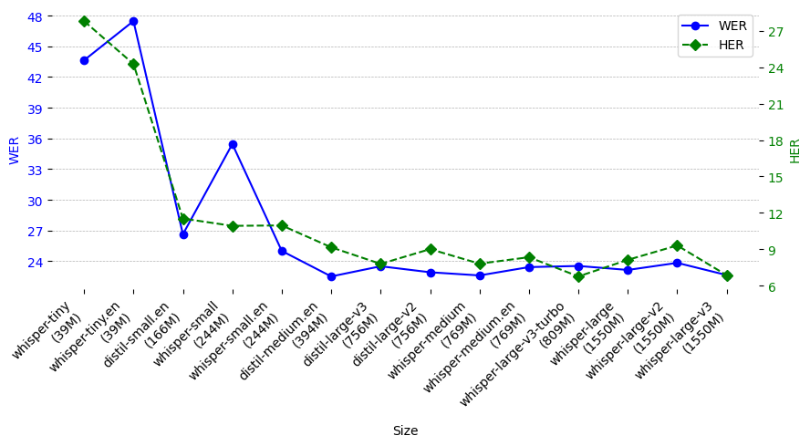 |
Lost in Transcription, Found in Distribution Shift: Demystifying Hallucination in Speech Foundation Models
Hanin Atwany*, Abdul Waheed*, Rita Singh, Monojit Choudhury, Bhiksha Raj Preprint, 2025 Paper |
| 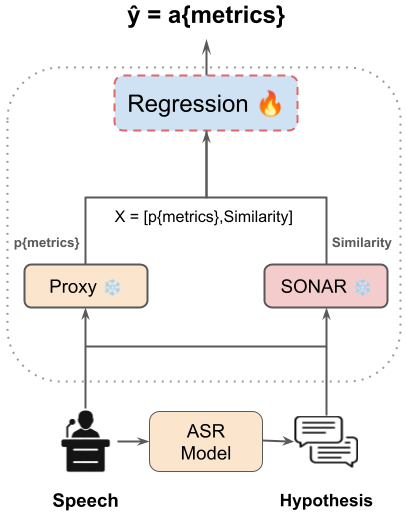 |
On the Robust Approximation of ASR Metrics
Abdul Waheed, Hanin Atwany, Rita Singh, Bhiksha Raj Preprint, 2025 Paper |
| 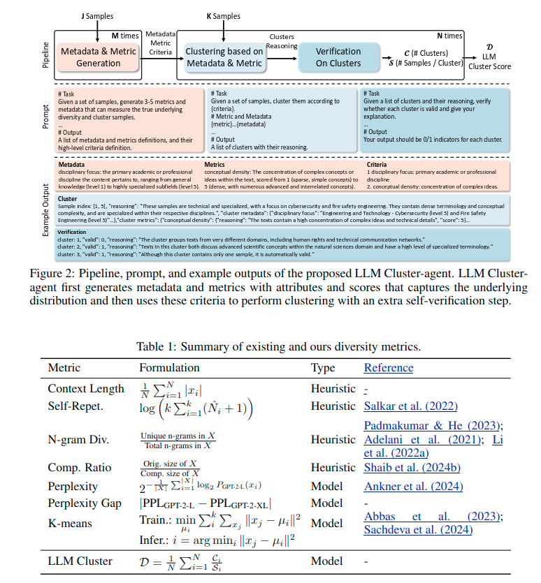 |
On the Diversity of Synthetic Data and its Impact on Training Large Language Models
Hao Chen, Abdul Waheed, Xiang Li, Yidong Wang, Jindong Wang, Bhiksha Raj, Marah I. Abdin Preprint, 2024 Paper |
| 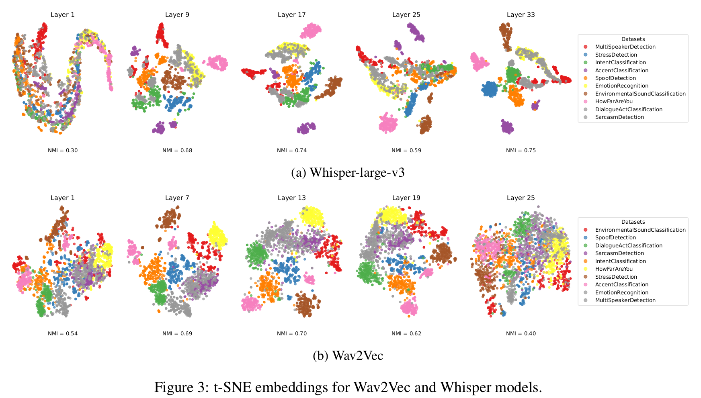 |
What Do Speech Foundation Models Not Learn About Speech?
Abdul Waheed, Hanin Atwany, Bhiksha Raj, Rita Singh Preprint, 2024 Paper |
| 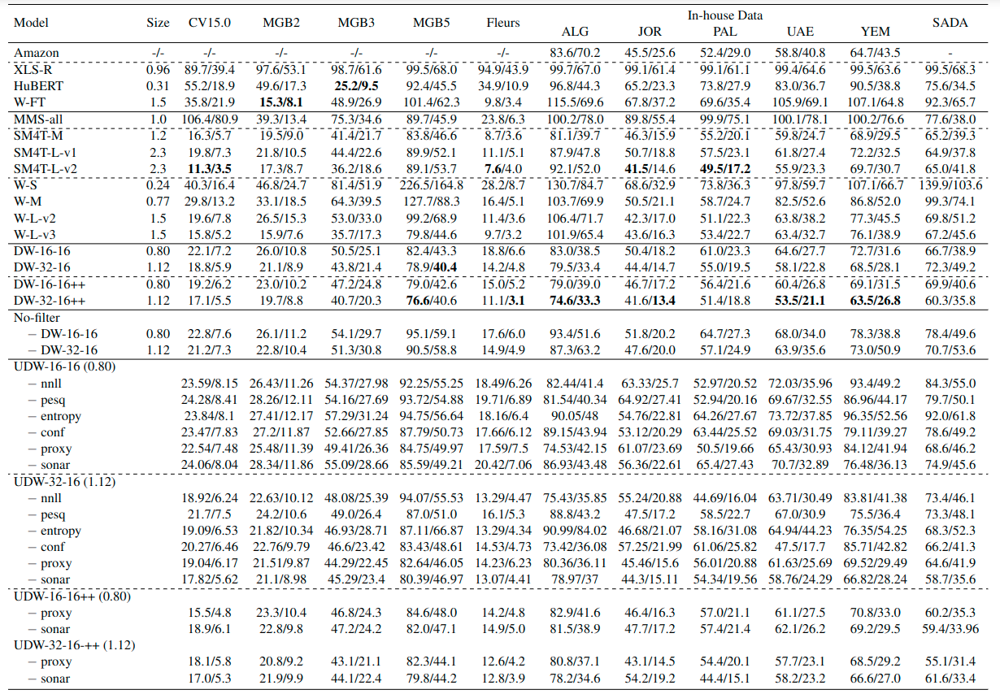 |
uDistil-Whisper: Label-Free Data Filtering for Knowledge Distillation in Low-Data Regimes
Abdul Waheed, Karima Kadaoui, Muhammad Abdul-Mageed NAACL Main, 2025 Paper |
| 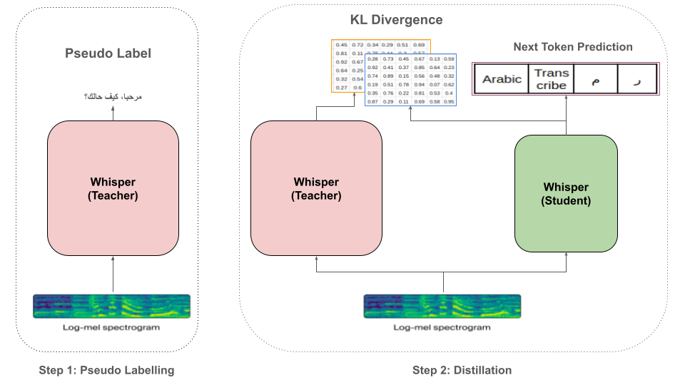 |
To Distill or Not to Distill? On the Robustness of Robust Knowledge Distillation
Abdul Waheed, Karima Kadaoui, Muhammad Abdul-Mageed ACL Main, 2024 Paper | Models |
| 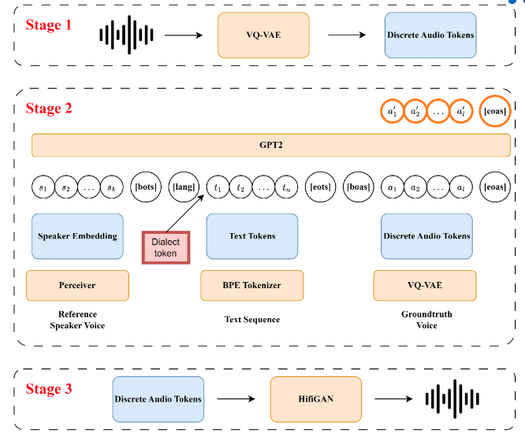 |
Towards Zero-Shot Text-To-Speech for Arabic Dialects
Khai Duy Doan, Abdul Waheed, Muhammad Abdul-Mageed ArabicNLP conference co-located with ACL , 2024 Paper |
| 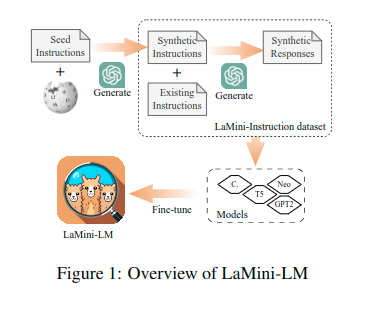 |
LaMini-LM: A Diverse Herd of Distilled Models from Large-Scale Instructions
Minghao Wu, Abdul Waheed, Chiyu Zhang, Muhammad Abdul-Mageed, Alham Fikri Aji EACL Main, 2024 Paper | Models | Data |
| 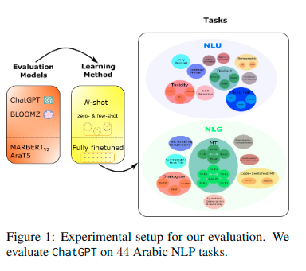 |
GPTAraEval: A Comprehensive Evaluation of ChatGPT on Arabic NLP
Md Tawkat Islam Khondaker, Abdul Waheed, El Moatez Billah Nagoudi, Muhammad Abdul-Mageed EMNLP Main, 2023 Paper |
| 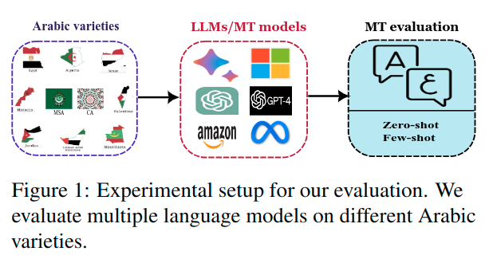 |
TARJAMAT: Evaluation of Bard and ChatGPT on Machine Translation of Ten Arabic Varieties
Karima Kadaoui*, Samar M. Magdy*, Abdul Waheed*, Md Tawkat Islam Khondaker, Ahmed Oumar El-Shangiti, El Moatez Billah Nagoudi, Muhammad Abdul-Mageed ArabicNLP conference co-located with EMNLP, 2023 Paper |
| 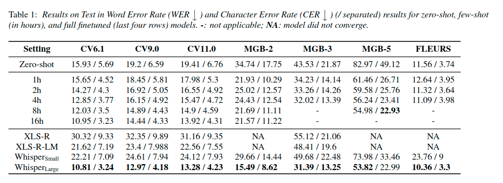 |
N-Shot Benchmarking of Whisper on Diverse Arabic Speech Recognition
Bashar Talafha*, Abdul Waheed*, Muhammad Abdul-Mageed Interspeech, 2023 Paper | Code |
| 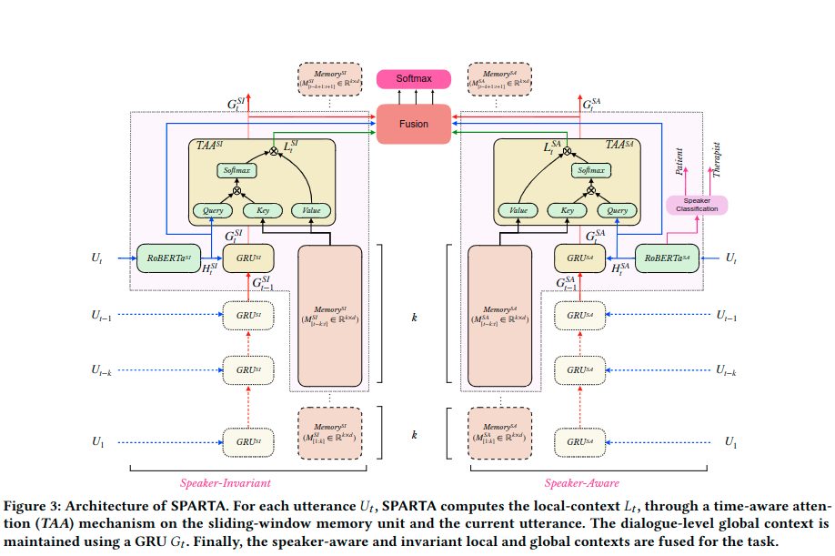 |
Speaker and Time-aware Joint Contextual Learning for Dialogue-act Classification in Counselling Conversations
Ganeshan Malhotra, Abdul Waheed, Aseem Srivastava, Md Shad Akhtar, Tanmoy Chakraborty ACM International Conference on Web Search and Data Mining (WSDM), 2022 Paper |
| 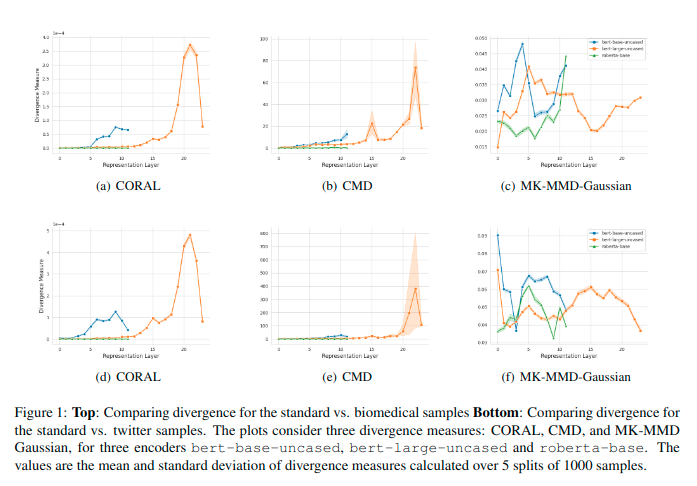 |
Analyzing the Domain Robustness of Pretrained Language Models, Layer by Layer
Abhinav Ramesh Kashyap, Laiba Mehnaz, Bhavitvya Malik, Abdul Waheed, Devamanyu Hazarika, Min-Yen Kan, Rajiv Shah Domain Adaptation for NLP workshop co-located with EACL, 2021 Paper |
|
Fork from Jon Barron's website. |